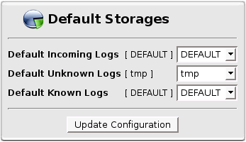
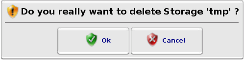

Storages
Storages
Here you can configure your Storages.
A Storage is a directory where Octopussy can store your logs.
In the top of the page, you can set which storages will be used for Default Storages.
There is 3 Default Storages:
- 'Default Incoming Logs' logs received but not parsed yet
- 'Default Unknown Logs' logs parsed but not recognized
- 'Default Known Logs' logs parsed and recognized
These 3 Default Storages are applied to each new Device.
You can redefine specific Storages for any Device in the  Device Storages page.
Device Storages page.
More information on logs archiving can be found in Octopussy Internals.

Storages Default Box
In the bottom of the page, you can create or  remove a Storage.
remove a Storage.
Storages List
Every time you will remove a Storage, a dialog window will ask you to confirm.

Dialog Window Confirmation